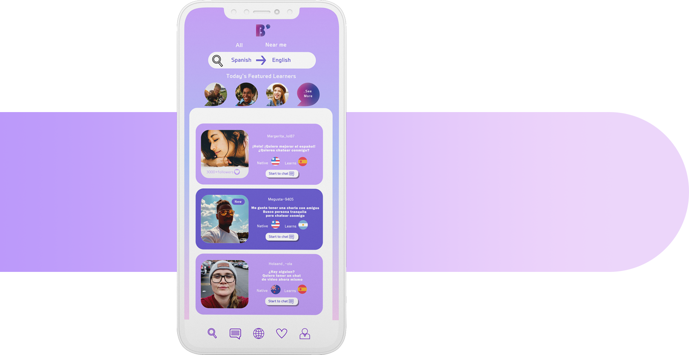
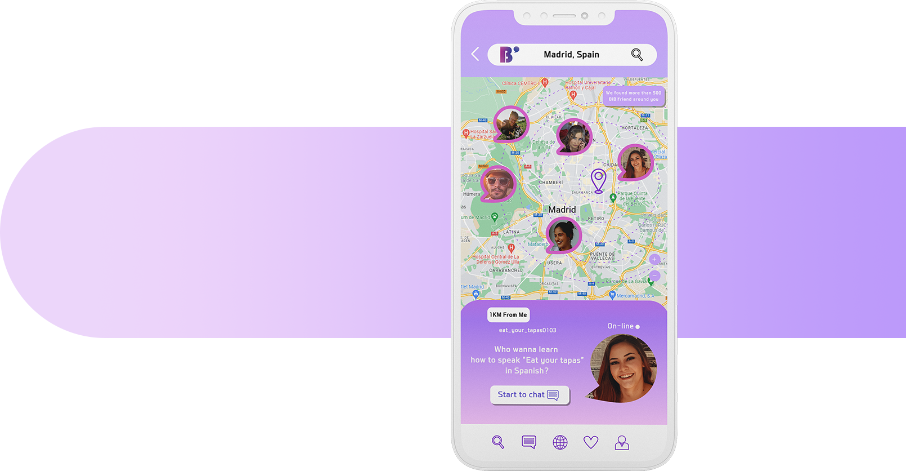
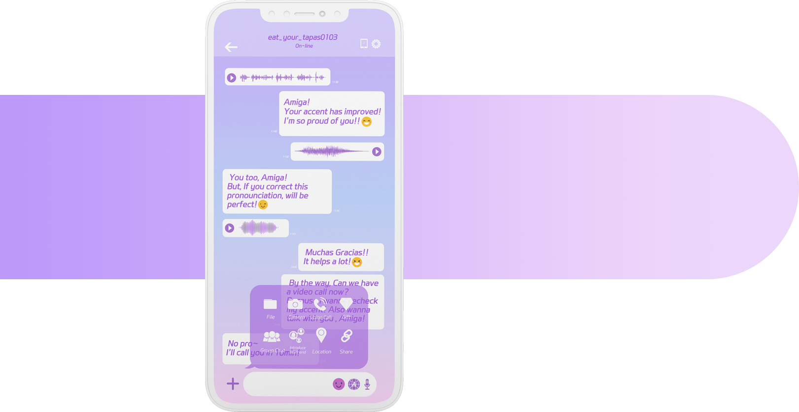
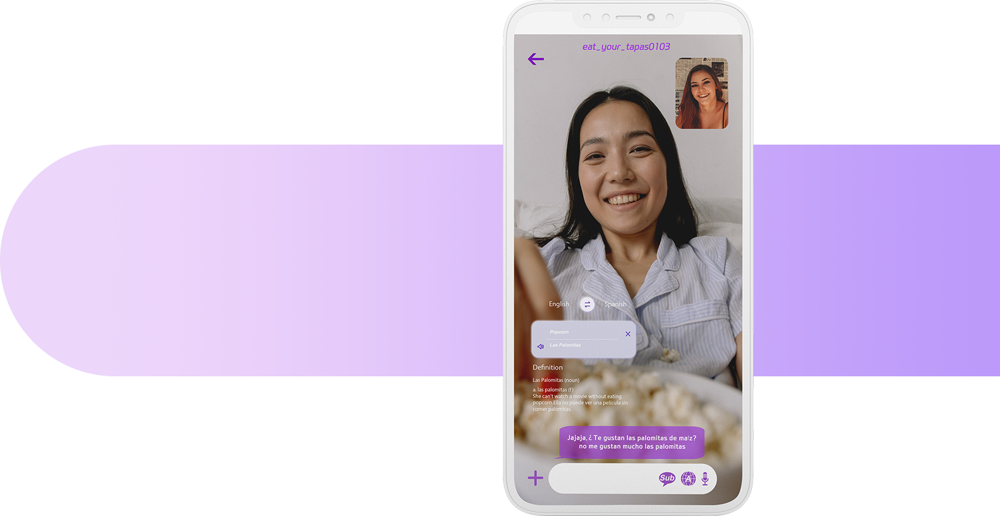

- 
1. Join the BiBitalk
Download the app and sigin up.
Once you are in, Select your native language
in left side of ‘search’ engine and
also select ‘learning language’.
And then BiBitalk will find your right partners.
If you find a lovely partner, Just click
‘Start to chat’ button and
say hello to your new friend. - 
2. Search by Location
We offer varies way to find a partner.
For example, Search by Native language,
Learning language, Country, Current location ,
and more. If you want to meet a partner in person,
You just need to put your location on.
BiBitalk will show you lovely partners aroud you! - 
3. Learn by text, voice and video
Once you start a conversation with a partner,
You can choice the best way to learn,
such as text, voice call, video call.
The best way to learn a language is to actually speak it!
So, BiBitalk suggest you that you with native partner have a video call.
But this isn't your standard social app.
The interface is packed with innovative tools to
make it fun and effortless to learn a new language.
You can chat with individual members, or join group chats
for a collaborative learning experience. - 
4. Video call with Subtitle
While you have a video call with your
partner, You might had some struggles.
Like you forgot the words you wanted to say...
So we offer the video call with automatic subtitle system.
Therefore, You don’t need to stand awkward silence anymore!
In addition, There are dictionary and translate icons
on the video call phone screen,
Also do not need to find other apps while
on a conversation.
So All you have to do is feel the joy of learning!